Prezentarea sesiunilor de educație pentru sănătate; evaluarea portofoliului
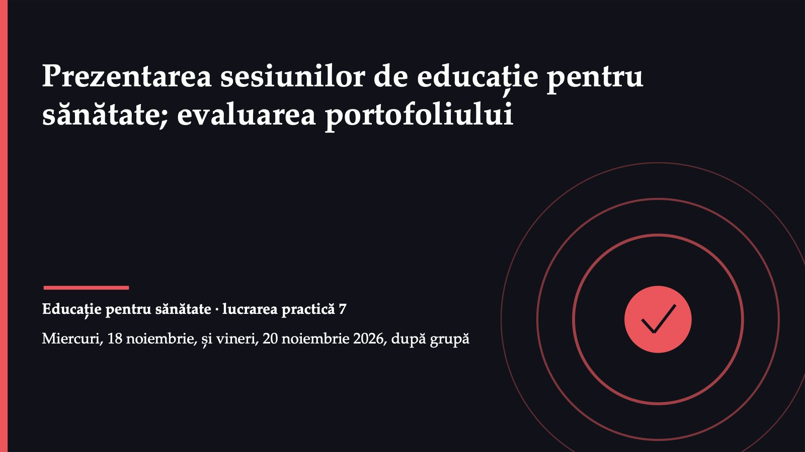
1 / 23Bună ziua. Lucrarea de azi are cele două părți numite în fișa disciplinei: prezentarea sesiunilor de educație pentru sănătate și evaluarea portofoliului. La cursul de luni ați scris, în echipă, planul unei sesiuni de educație pentru sănătate pentru pacienții unui cabinet de kinetoterapie. Azi o țineți.
Azi sunteți kinetoterapeuții unui cabinet
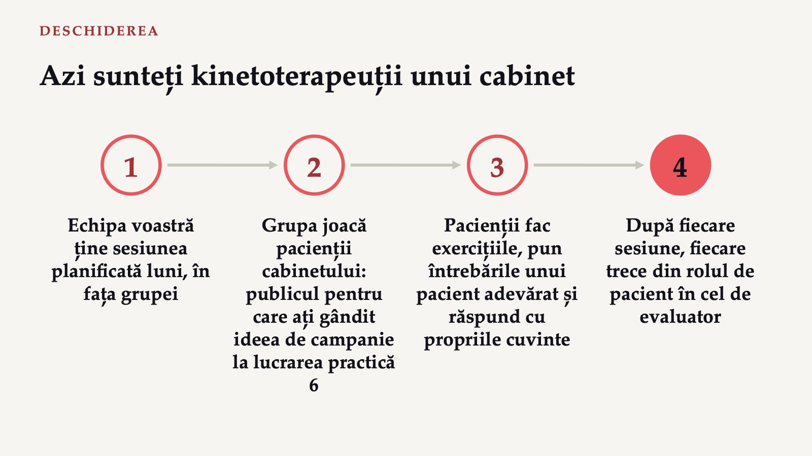
2 / 23Sesiunea de azi nu este o prezentare despre educația pentru sănătate, ci educația însăși: o întâlnire scurtă, planificată, a unor profesioniști cu un grup de oameni care au aceeași nevoie. Grupa joacă pacienții pe care echipa îi descrie la început, publicul pentru care ați gândit ideea de campanie la lucrarea practică trecută. Nu primiți fișe de rol și nu jucați pacienți dificili inventați. Un pacient care nu a înțeles ceva și spune asta ajută echipa mai mult decât unul care spune „da” la toate. Cine nu poate sau nu vrea să facă un exercițiu în rolul de pacient spune asta și observă.
“
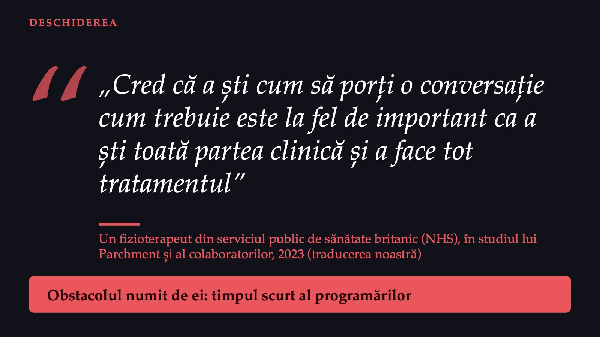
3 / 23Într-un studiu calitativ publicat în 2023, Parchment și colaboratorii au intervievat 11 fizioterapeuți din serviciul public de sănătate britanic (NHS), formați în programul „Making Every Contact Count”, în traducere „fiecare contact să conteze”. Ei au văzut conversațiile despre sănătate ca pe o parte a meseriei lor, care sprijină schimbarea comportamentului și autoîngrijirea. Obstacolul a fost timpul scurt al programărilor, iar mulți au spus că studenții ar trebui să învețe aceste conversații încă din facultate. Autorii spun și limita: participanții puteau fi deja favorabili acestor conversații. Conversațiile lor sunt individuale, cu un pacient; sesiunea voastră este pentru un grup, deci legătura este o adaptare a disciplinei. Lucrul comun rămâne: timpul este scurt, iar ce încape în el trebuie ales dinainte. Pentru asta ați scris planul.
Ordinea și timpul
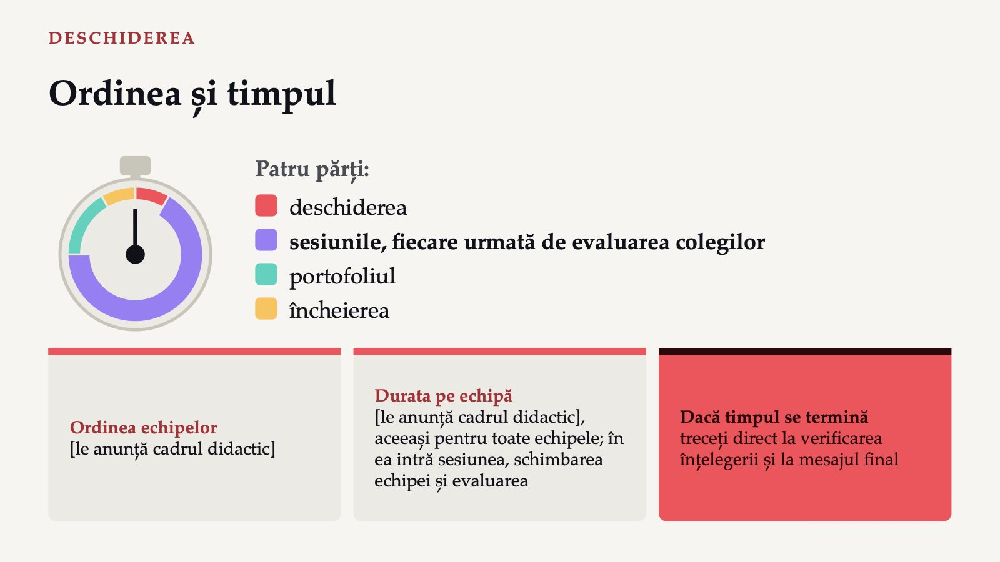
4 / 23Lucrarea are patru părți: deschiderea, sesiunile echipelor, fiecare urmată de evaluarea colegilor, verificarea portofoliului și încheierea. Timpul sesiunilor se împarte egal între echipele prezente, iar durata pe echipă se anunță acum, o singură dată. Echipa ține sesiunea așa cum a planificat-o, dar planul este un plan, nu un text de citit: un pacient care nu înțelege sau o întrebare neprevăzută se rezolvă cum ar rezolva un kinetoterapeut în cabinet, cu o explicație mai simplă și cu o nouă verificare. Dacă timpul se termină, treceți la verificarea înțelegerii și la mesajul final. O sesiune care nu ajunge la verificare a pierdut tocmai partea care o deosebește de o prezentare.
Regulile evaluării
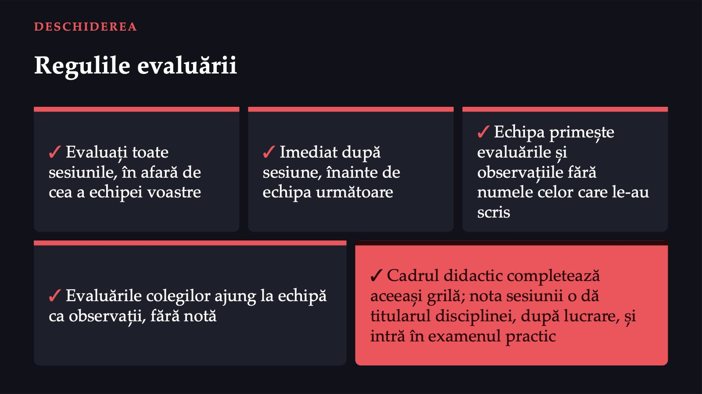
5 / 23Câteva reguli pentru toată lucrarea. Evaluați toate sesiunile, în afară de cea a echipei voastre, imediat după fiecare, cât vă amintiți ce ați văzut. Echipa primește evaluările și observațiile fără numele celor care le-au scris. Evaluările voastre nu devin notă: ajung la echipă ca observații. Cadrul didactic completează azi aceeași grilă pentru fiecare sesiune; nota pentru calitatea sesiunii o dă titularul disciplinei, după lucrare, din grilele cadrelor didactice, și ea intră în examenul practic al lucrărilor practice, care are, după fișa disciplinei, 30% din nota finală. Planul scris la curs nu primește o notă separată: este materialul de lucru al echipei. Portofoliul intră în activitatea din timpul semestrului, cu criteriile „participare activă, portofoliu complet”, care are 10% din nota finală.
Evaluarea între colegi pe grilă de criterii
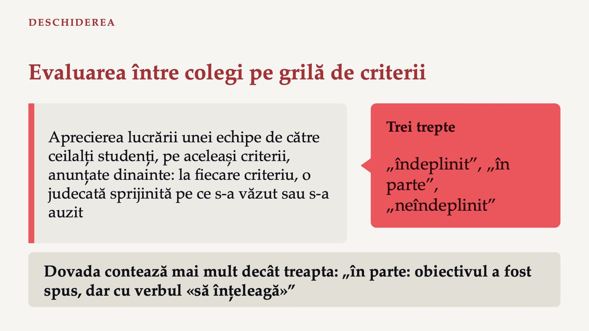
6 / 23Ce faceți după fiecare sesiune are un nume: evaluarea între colegi pe grilă de criterii. Grila nu este un test cu răspunsuri bune și greșite. Este o listă de lucruri care se văd sau se aud în sală, scoase din ce ați învățat la cursul 7 despre sesiunea de educație pentru sănătate. Dovada contează mai mult decât treapta: un simplu „în parte” nu îi spune echipei nimic, pe când „în parte: obiectivul a fost spus, dar cu verbul «să înțeleagă»” îi spune ce să schimbe. Dovada, într-un rând, se scrie numai la „în parte” și la „neîndeplinit”.
Rezolvarea se vede în formularul fișei, după ce o predați.
Rezolvarea se vede în formularul fișei, după ce o predați.
Rezolvarea se vede în formularul fișei, după ce o predați.
Rezolvarea se vede în formularul fișei, după ce o predați.
Rezolvarea se vede în formularul fișei, după ce o predați.
Rezolvarea se vede în formularul fișei, după ce o predați.
Rezolvarea se vede în formularul fișei, după ce o predați.
Rezolvarea se vede în formularul fișei, după ce o predați.
Rezolvarea se vede în formularul fișei, după ce o predați.
Rezolvarea se vede în formularul fișei, după ce o predați.
Rezolvarea se vede în formularul fișei, după ce o predați.
Rezolvarea se vede în formularul fișei, după ce o predați.
Rezolvarea se vede în formularul fișei, după ce o predați.
Rezolvarea se vede în formularul fișei, după ce o predați.
Sesiunea echipei [numărul]
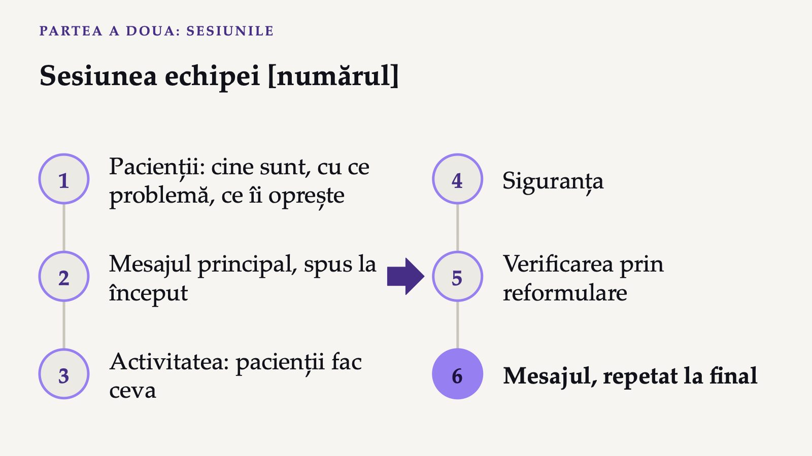
14 / 23Echipa începe cu descrierea pacienților, într-o propoziție sau două, ca să știți pe cine jucați. Apoi urmează planul: mesajul principal spus la început, activitatea în care pacienții fac ceva, siguranța, verificarea prin reformulare și mesajul repetat la final. Ca pacienți, faceți exercițiile, puneți întrebările pe care le-ar pune un pacient adevărat și răspundeți la verificare cu propriile cuvinte.
Rezolvarea se vede în formularul fișei, după ce o predați.
Rezolvarea se vede în formularul fișei, după ce o predați.
?
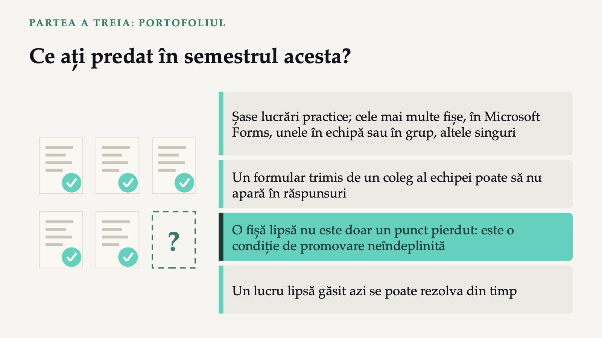
16 / 23Ultima parte privește tot semestrul. Ați lucrat șase lucrări practice; cele mai multe fișe le-ați completat în Microsoft Forms, unele în echipă sau în grup, altele singuri. Fișa disciplinei pune predarea tuturor materialelor și prezența de 100% la lucrările practice între condițiile de promovare. O fișă lipsă nu este deci doar un punct pierdut. Acum verificăm dacă fiecare fișă apare la locul ei; un lucru lipsă găsit azi se poate rezolva din timp.
Portofoliul individual de lucrări practice
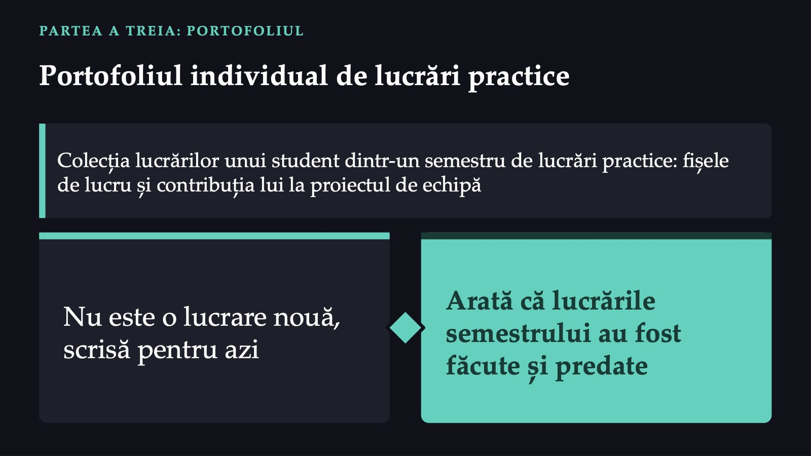
17 / 23Ce verificați se numește portofoliul individual de lucrări practice. Fișa disciplinei îl cere fiecărui student și spune că activitatea practică a fiecăruia se documentează într-un portofoliu de fișe de lucru. Portofoliul nu este o lucrare nouă, scrisă pentru această zi: el arată că lucrările semestrului au fost făcute și predate.
Ce conține portofoliul
![PARTEA A TREIA: PORTOFOLIUL Ce conține portofoliul Fișele de lucru ale primelor șase lucrări practice, așa cum le-ați predat: 1 fișa postului; fișa de pornire a proiectului echipei 2 pacientul și cartierul 3 programul de educație pentru sănătate 4 analiza critică a unui material de educație pentru sănătate 5 explicarea programului de exerciții la domiciliu și sfatul scurt, cu fișa de observație 6 criteriile marketingului social pe cele două campanii Contribuția la proiectul echipei fișa de pornire (lucrarea practică 1) posterul (lucrarea practică 6) planul sesiunii (cursul 7) rolul vostru azi](diapozitive/LP07/018.jpg) 18 / 23
18 / 23După fișa disciplinei, portofoliul are două părți. Prima sunt fișele de lucru ale primelor șase lucrări practice, așa cum le-ați predat. A doua este contribuția voastră la proiectul echipei: fișa de pornire de la prima lucrare practică, posterul cu ideea de campanie pentru pacienții unui cabinet de kinetoterapie de la a șasea, planul sesiunii scris la cursul 7 și rolul vostru în sesiunea de azi.
Rezolvarea se vede în formularul fișei, după ce o predați.
Rezolvarea se vede în formularul fișei, după ce o predați.
Dovada sunt fișele predate
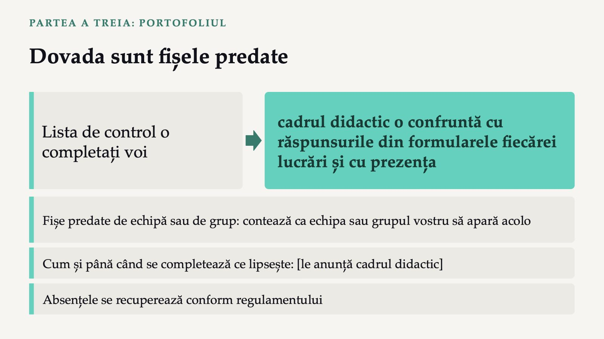
20 / 23Lista de control nu face singură dovada: dovada sunt fișele predate, pe care cadrul didactic le confruntă cu răspunsurile din formularele fiecărei lucrări. Pentru fișele predate de echipă sau de grup, contează ca echipa sau grupul vostru să apară acolo; de aceea vă cerem numărul echipei sau numele colegilor. Fișa disciplinei spune că prezența la lucrările practice este obligatorie și că absențele se recuperează conform regulamentului. Cum și până când se completează ce lipsește, ca și recuperarea unei absențe, se anunță după regulament: [le anunță cadrul didactic].
Trei întrebări, anonim
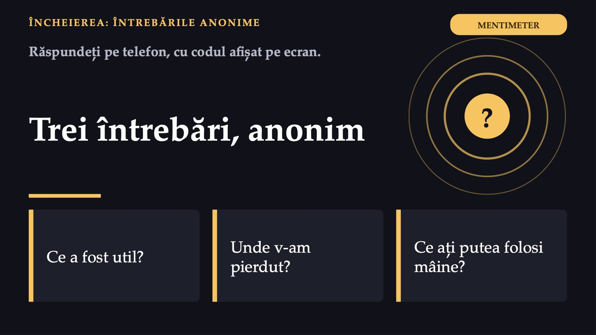
21 / 23Înainte de final, trei întrebări anonime despre lucrarea de azi: ce a fost util, unde v-am pierdut și ce ați putea folosi mâine. Nu există răspunsuri corecte; ce scrieți ne arată ce trebuie schimbat.
Ce urmează
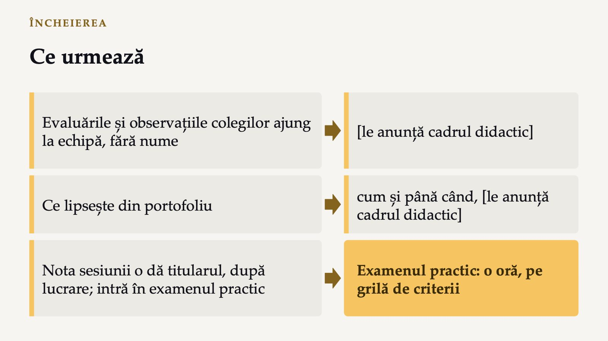
22 / 23Ce urmează. Echipele primesc evaluările și observațiile colegilor, fără numele celor care le-au scris: [le anunță cadrul didactic]. Ce lipsește din portofoliu se completează după regulament: [le anunță cadrul didactic]. Nota pentru calitatea sesiunii o dă titularul disciplinei, după lucrare, din grilele cadrelor didactice; ea intră în examenul practic al lucrărilor practice, care este, după fișa disciplinei, un examen practic de o oră, pe grilă de criterii.
Ce faceți diferit de mâine
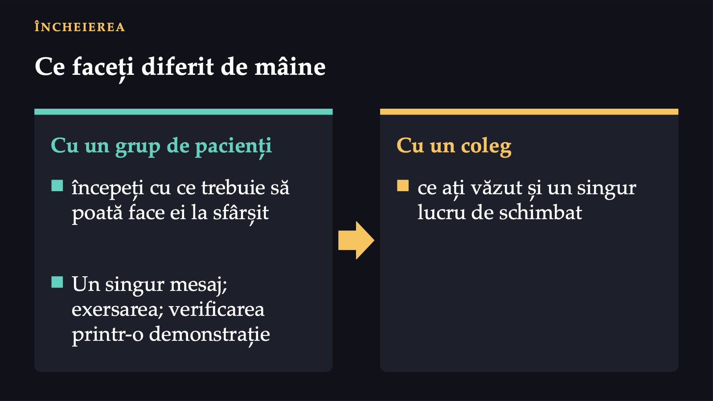
23 / 23Când vorbiți cu un grup de pacienți, nu începeți cu ce știți voi să spuneți. Începeți cu ce trebuie să poată face ei la sfârșit, alegeți un singur mesaj, lăsați-i să exerseze și verificați, cu o demonstrație, ce au înțeles. Iar când evaluați un coleg, scrieți ce ați văzut și un singur lucru pe care l-ar putea schimba: așa ați vrea să primiți și voi o observație. Vă mulțumesc.
Săgeți sau spațiu: navigare · O: vedere de ansamblu · N: notele prezentatorului · F: ecran complet · Esc: închidere